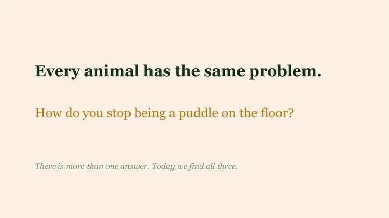
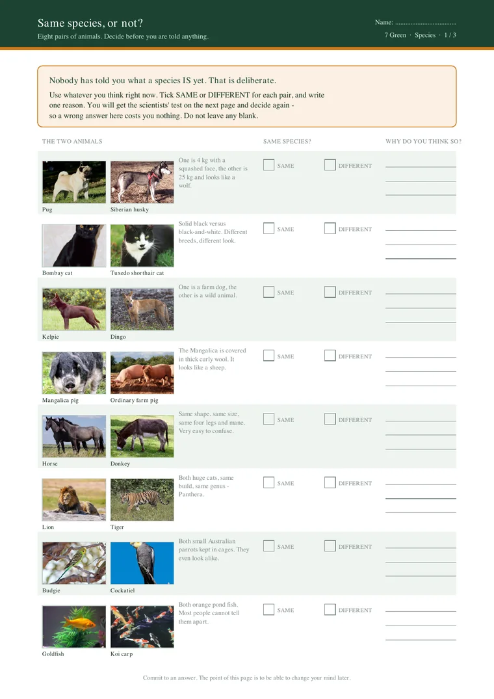
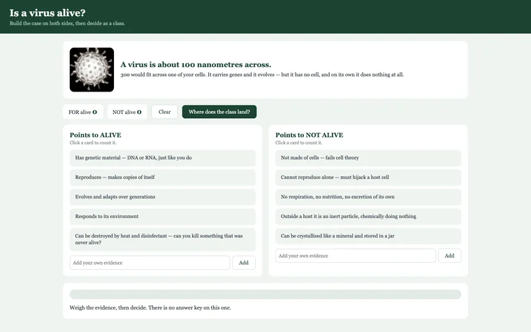
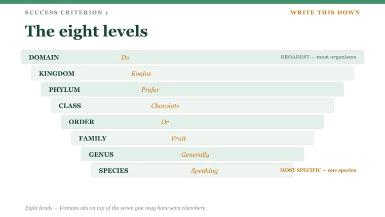

Year 7 Science, made with AI
Teaching resources I create with AI for my own Year 7 class: documentary-style slides, project lessons, worksheets and interactive activities.
The Year 7 Science resources were created with AI for my own classes and are shown as screenshots only.

The classroom problem
Good lessons take hours to prepare, and stock slides and worksheets rarely make students think. I use AI to produce a whole unit to a high standard, while I decide the teaching.
What it does
- Slide decks in a documentary style: a real photograph and a question worth arguing about, then explicit teaching.
- Project lessons where students reason from evidence, such as designing an animal that could survive the Australian outback.
- Worksheets with matching teacher versions and answer keys.
- Interactive activities and a whole-class review game.
How I use AI
I set the teaching rules and AI does the production. Every lesson starts from the syllabus and the school's teaching program. The activity is the lesson; I teach before I assess; students work answers out rather than reading them off a table; answer keys are produced from the same data as the slides, so they can't contradict each other; and every resource is checked as rendered pages before it reaches students. Photographs are openly licensed from Wikimedia Commons.
A closer look
Select a screenshot to see it in a larger view.











These are screenshots of resources made for my own classes. The teaching resources are not offered for download.